李德胜 LI DESHENG / 主讲人 李德胜 · AI与数字时尚设计
釜山大学服装设计学博士
韩国釜山大学助理讲师
聚焦AI与时尚设计的融合，创作与研究涵盖系列服装、数字时装、AI时尚影像与VR展示，将设计构想转化为作品与展示成果。
SELECTED HONORS / 代表荣誉
韩国ESG服装设计大赛 · 冠军
获汉帛奖、虎门杯、常熟杯、濮院杯、海峡杯等20余项大赛奖项。
查看李德胜作品与经历 ↗
范超 FAN CHAO / 主讲人 范超 · 设计与竞赛实践
十余年设计实践
无锡無我时尚设计工作室主理人
以“设计无界，匠心永恒”为理念，探索服装结构、材质与系列表达。本期将结合设计实践与竞赛经验，为学员提供指导。
代表奖项 / SELECTED AWARDS
大浪女装设计大赛 · 金奖 濮院杯针织设计大赛 · 金奖 丝路长安国潮设计大赛 · 金奖 真维斯休闲服饰设计大赛 · 东部赛区金奖、总决赛银奖 虎门杯女装设计大赛 · 铜奖
COMPETITION DESIGN / 比赛效果图
范超 · 比赛效果图 6组比赛效果图 · 左右滑动 · 点击放大
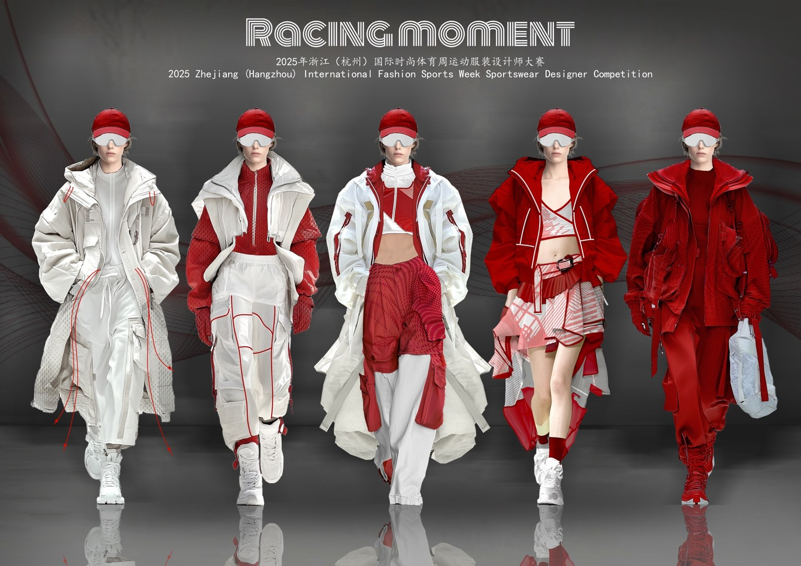
RACING MOMENT · 红白运动系列范超作品 / FAN CHAO ↗ 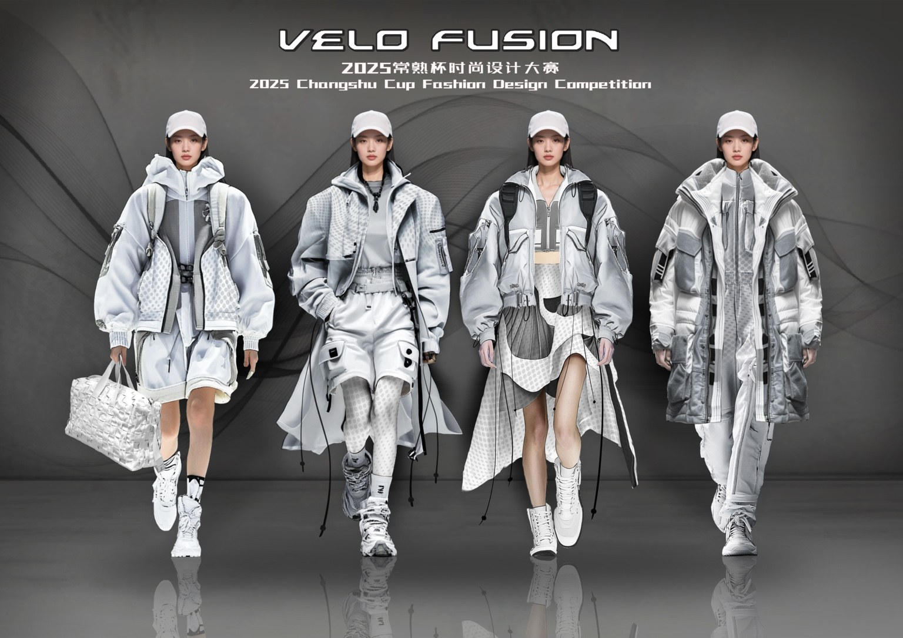
VELO FUSION · 银灰运动系列范超作品 / FAN CHAO ↗ VELO FUTURE RUN · 系列设计范超作品 / FAN CHAO ↗ 白色机能系列 · 比赛效果图范超作品 / FAN CHAO ↗ 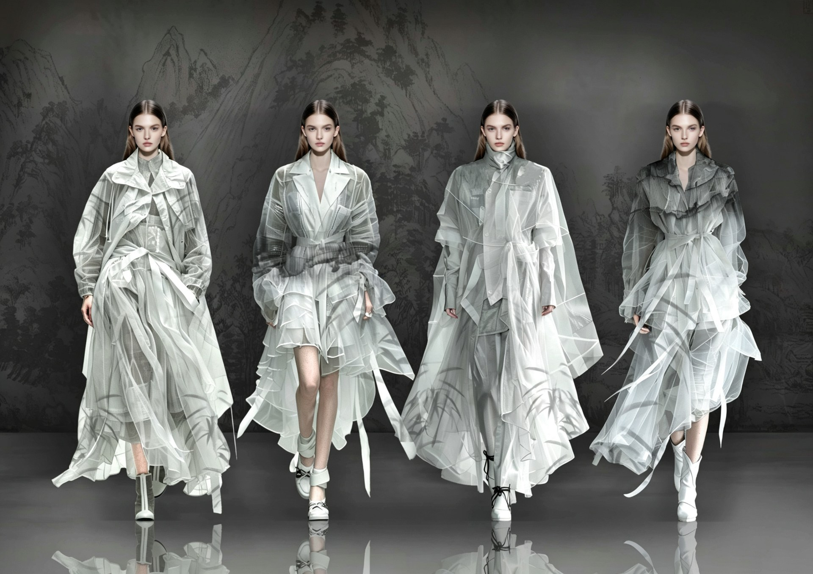
浅色层叠系列 · 比赛效果图范超作品 / FAN CHAO ↗ 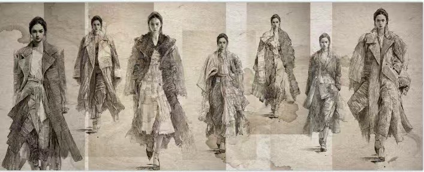
灰褐色系列 · 设计效果图范超作品 / FAN CHAO ↗ ← 1 / 6 → 暂停自动切换
RUNWAY SELECTION / 秀场作品精选
范超 · 秀场作品 12套成衣造型 · 左右滑动 · 点击放大
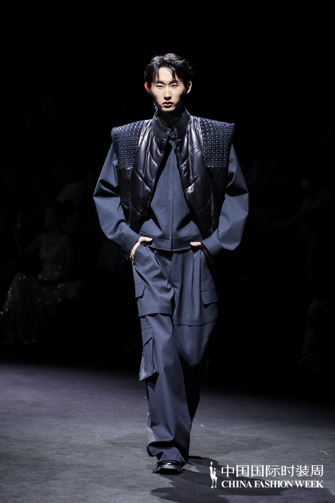
立体肩部与层次搭配范超作品 / FAN CHAO ↗ 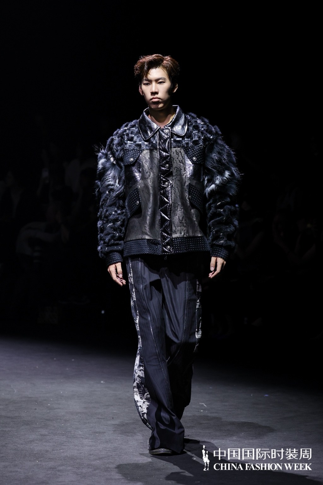
多材质拼接与表面肌理范超作品 / FAN CHAO ↗ 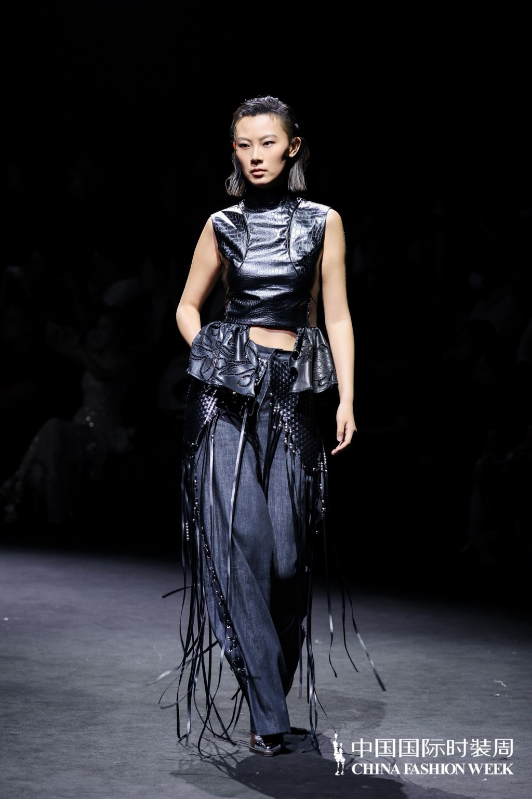
腰部结构与流苏细节范超作品 / FAN CHAO ↗ 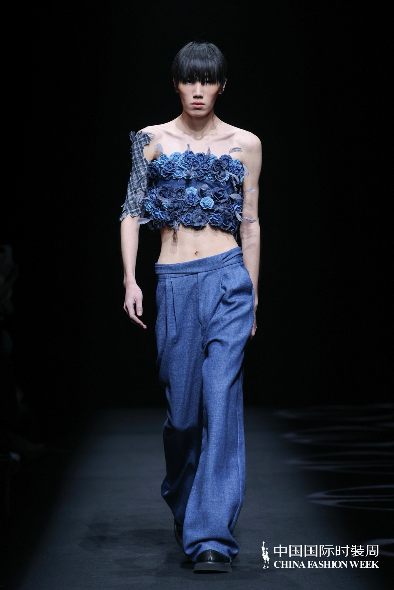
立体花卉与蓝色造型范超作品 / FAN CHAO ↗ 夸张袖型与抽褶结构范超作品 / FAN CHAO ↗ 酒红色层次与花卉装饰范超作品 / FAN CHAO ↗ 黑色长外套与领部层次范超作品 / FAN CHAO ↗ 紫色外套与花卉装饰范超作品 / FAN CHAO ↗ 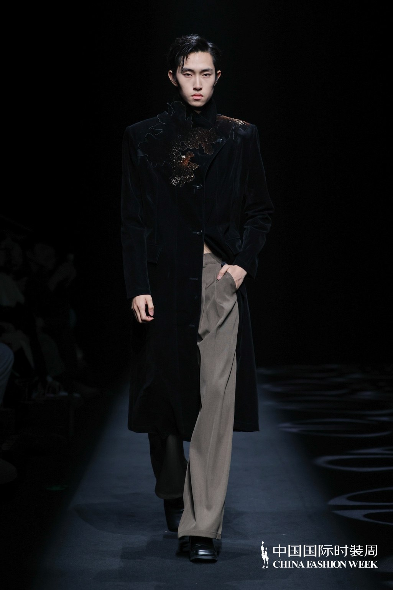
深色长外套与不对称搭配范超作品 / FAN CHAO ↗ 深色套装与图案表达范超作品 / FAN CHAO ↗ 浅色套装与花卉细节范超作品 / FAN CHAO ↗ 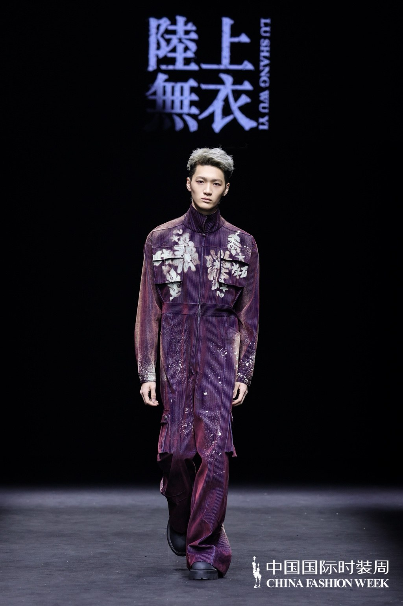
紫色男装与装饰细节范超作品 / FAN CHAO ↗ ← 1 / 3 → 暂停自动切换
咨询第14期课程安排 ↗
BETWEEN FORMS · 酒红针织系列LI DESHENG / 讲师作品 ↗ 以一个系列项目贯穿六天：从灵感研究、廓形开发，到效果图、款式图与设计方案册，再衔接AI辅助打版、CLO3D试穿、时尚短片与作品集网站。
从设计构想， From imagination to collection
结合AI创作技巧与服装设计方法，完成系列开发，并延伸至时尚影像与作品集展示。
探索六天课程 ↘
第14期现已开放报名，具体开课日期另行公布。
讲师作品 / LI DESHENG · 点击图片放大
蓝灰解构 · 透明空间 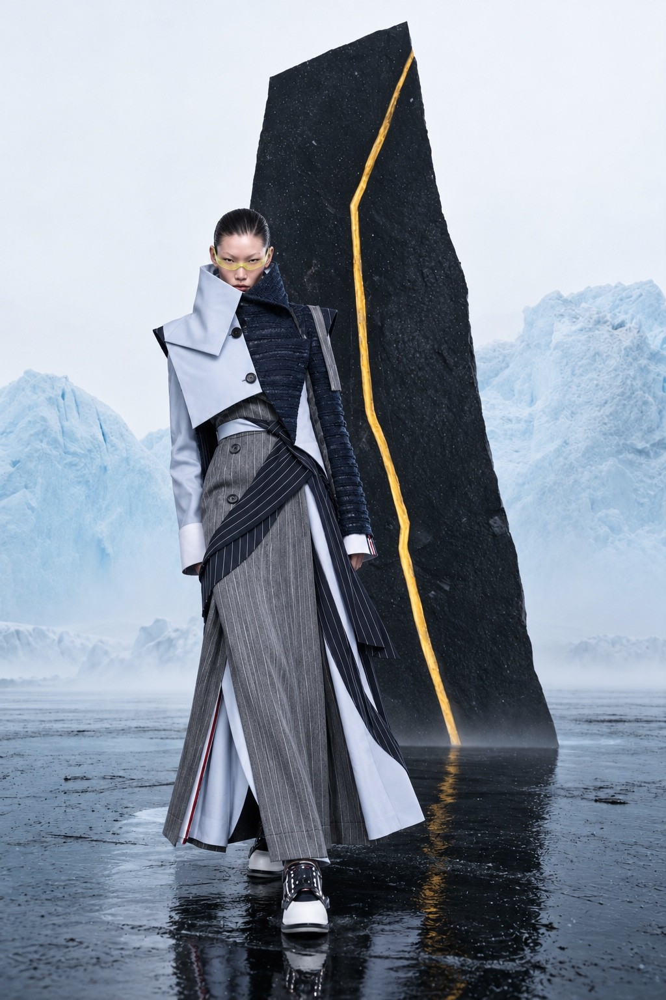
蓝灰解构 · 冰川场景 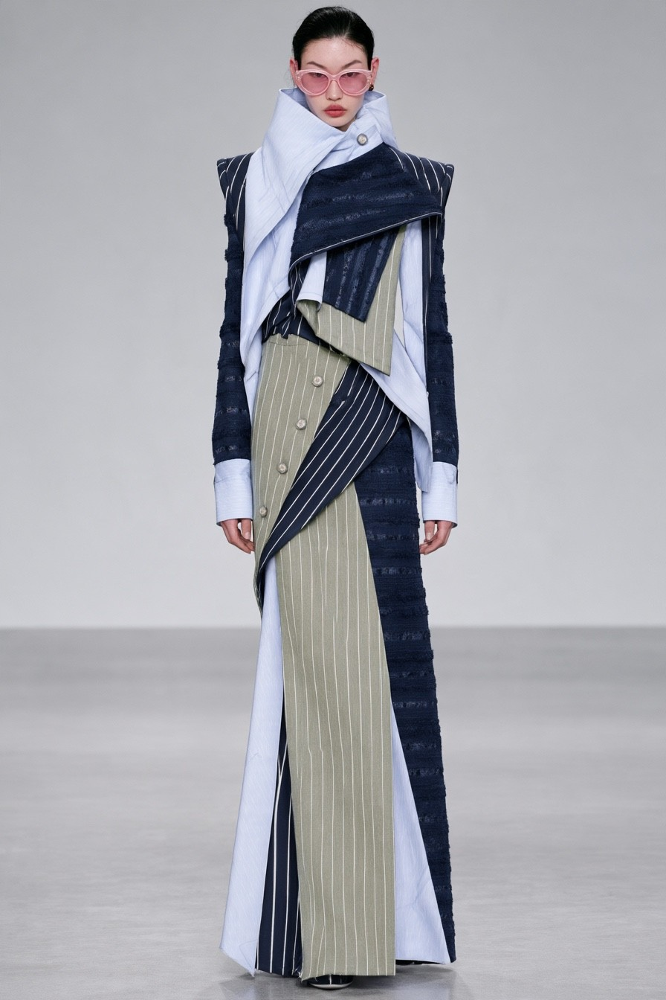
条纹层叠 · 造型表达 左右滑动浏览 3 幅作品 →
Competition / 比赛效果图与提案表达
让系列设计，成为完整的参赛提案。 围绕主题、系列感与版面表达，学习如何组织比赛效果图。以下为讲师系列作品，用于展示参赛提案可参考的表达方式。
AFTERBEING · 系列效果图 以黑色调贯穿系列，通过廓形、流苏与结构变化建立款式节奏。
概念系列 · 场景化表达 围绕统一色彩与材质语言，呈现服装与环境之间的视觉关系。
层叠系列 · 整体造型 通过叠搭、纹样与色彩呼应，呈现完整系列的设计语言。
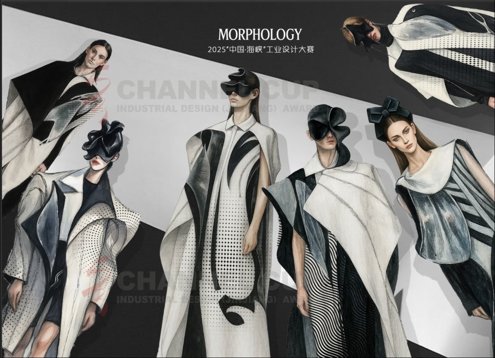
MORPHOLOGY · 形态研究 将设计概念转化为成组服装，练习系列统筹与视觉叙事。
Design expression / 单款效果图
从系列整体，到单款的细节表达。 观察廓形层次、图案分布与材质搭配。点击图片可放大。
单款 01 · 几何层叠 几何分割、折叠层次与黑白灰纹样的组合。
单款 02 · 垂坠与包裹 米白与灰绿色之间的层次、垂坠与材质对比。
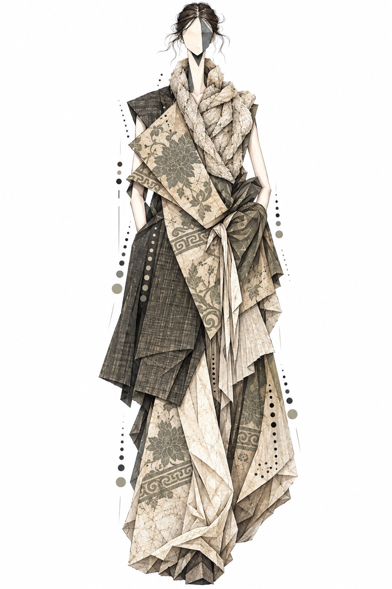
单款 03 · 纹样与拼接 花卉纹样、色块与不对称结构的协调表达。
← 1 / 3 → 暂停自动切换
主题分析 系列效果图 款式与细节 面料与色彩 提案排版
讲师作品 / LI DESHENG · 此处展示设计表达示例；具体参赛需按各赛事要求整理材料。
20+
学员覆盖20多所知名院校师生
院校教师 在校学生 企业设计师 十佳设计师
部分学员所在院校
北京服装学院 中国美术学院 江西服装学院 浙江传媒大学 东北师范大学 天津工业大学 天津师范大学 四川师范大学 以上为部分学员所在院校。
Who this is for / 适合人群
找到适合你的学习方向。 无论从学习、教学还是设计实践出发，都可以围绕自己的目标，连接AI创作与服装设计。
01 设计专业学生 面向希望参加服装设计大赛，以及准备考研或留学作品集的设计专业学生。将AI用于主题研究、系列创作与设计表达，系统整理效果图、款式图和个人作品集。
服装设计大赛 · 考研作品集 · 留学作品集
02 院校教师与教研人员 希望了解AI服装设计的完整流程，将创作方法、案例实践与数字设计工具融入教学研究。
方法体系 · 案例实践 · 数字教学
03 企业服装设计师 面向企业在职设计师及准备应聘企业设计岗位的设计师。将AI融入灵感探索、系列开发与设计提案，并整理适用于简历投递及面试展示的作品集。
企业设计开发 · 求职投递 · 作品集展示
04 独立设计师与品牌主理人 希望建立从系列服装开发到品牌视觉传播的工作流程，创作AI时尚Campaign与动态影像，并搭建线上作品展示空间。
系列风格 · 品牌视觉 · 个人网站
05 时尚视觉与内容创作者 希望围绕服装开展AI模特塑造、场景与光影设计、AI时尚Campaign及动态影像创作，拓展时尚视觉表达。
AI模特 · AI时尚Campaign · 动态影像
06 希望系统进阶的AI学习者 具备AI图像生成实践经验，希望进一步掌握独有创作技巧，从单幅视觉探索进阶到完整的系列服装设计项目。
独有技巧 · 系列统筹 · 完整流程